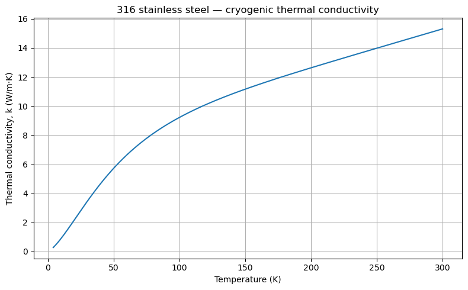
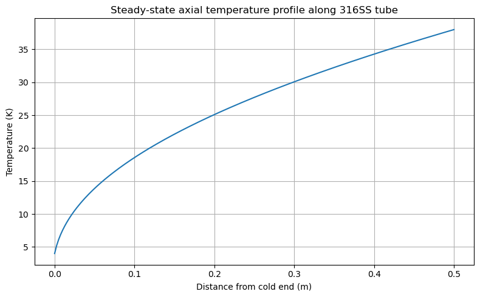
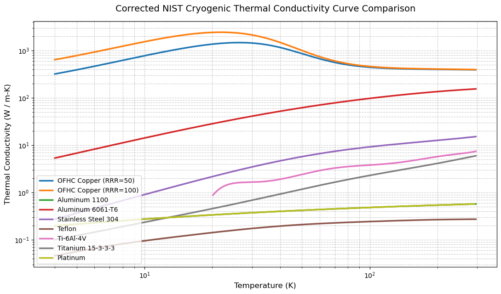

Code
#Load all of the libraries
import numpy as np
import pandas as pd
import matplotlib.pyplot as plt
from scipy.integrate import quadThis notebook shows common dimensions of SS Swagelok tubing and estimates steady-state heat conducted down the length of a 316 stainless steel tube, from a warm end to a cold end. Often times in cryogenic gas systems, SS tubing is used to traverse a cryostat from room temperature down to cryogenic temperatures. Estimating the heat load can be useful to figure out if you need more tubing length or a smaller diameter to reduce heat loads on the cryostat, or if you need more tubing volume you can figure out how much additional heat load you might apply to the cryostat.
Here we use the NIST cryogenic thermal-conductivity curve fit for the specific metal. NIST has some great publications and a resources on cryogenic properties of common materials. Solids are accessible on the website, and liquids/gases can be accessed through the RefProp software package, which is similar to CoolProp.
Often times, when designing or operating low volume gas handling systems, knowing the volume per unit length of tube can be useful. This section reads the tubing data for Swagelok 316SS tubing (Tabel 3 - Fractional Stainless Steel Seamless Tubing), adds tubing volume (cc) per inch length and inch length per unit volume (cc). Calcuating volume (cc) per inch length is as simple as multiplying the tube cross-section by the unit conversion cubed.
\[\frac{Vol [cc]}{Len [in]} = \frac{\pi \cdot (OD[in] - 2*thk[in])^2}{4} \cdot (2.54\frac{[cm]}{[in]})^3\]
from fractions import Fraction
tubes = pd.read_csv("SwagelokTubeSizes.csv", header=[0, 1])
#tubing volume per inch of length
#tubing length per cc of volume
tubes[("vol_len","cc/in")] = np.pi/4*(tubes[("Tube_OD","in")] - 2*tubes[("Wall","in")])**2 * (2.54)**3
tubes[("len_vol","in/cc")] = 1/tubes[("vol_len","cc/in")]
tubes[("Tube_OD","in")] = tubes[("Tube_OD","in")].apply(lambda x: Fraction(x).limit_denominator(16))
tubes.round(3)| Tube_OD | Wall | Pressure | vol_len | len_vol | |
|---|---|---|---|---|---|
| in | in | psig | cc/in | in/cc | |
| 0 | 1/16 | 0.010 | 5,600 | 0.023 | 43.016 |
| 1 | 1/16 | 0.012 | 6,800 | 0.019 | 52.419 |
| 2 | 1/16 | 0.014 | 8,100 | 0.015 | 65.279 |
| 3 | 1/16 | 0.016 | 9,400 | 0.012 | 83.524 |
| 4 | 1/16 | 0.020 | 12,000 | 0.007 | 153.477 |
| 5 | 1/8 | 0.028 | 8,500 | 0.061 | 16.320 |
| 6 | 1/8 | 0.035 | 10,900 | 0.039 | 25.685 |
| 7 | 3/16 | 0.028 | 5,400 | 0.223 | 4.493 |
| 8 | 3/16 | 0.035 | 7,000 | 0.178 | 5.628 |
| 9 | 3/16 | 0.049 | 10,200 | 0.103 | 9.700 |
| 10 | 1/4 | 0.028 | 4,000 | 0.484 | 2.064 |
| 11 | 1/4 | 0.035 | 5,100 | 0.417 | 2.398 |
| 12 | 1/4 | 0.049 | 7,500 | 0.297 | 3.363 |
| 13 | 1/4 | 0.065 | 10,200 | 0.185 | 5.396 |
| 14 | 5/16 | 0.035 | 4,000 | 0.757 | 1.321 |
| 15 | 5/16 | 0.049 | 5,800 | 0.592 | 1.689 |
| 16 | 5/16 | 0.065 | 8,000 | 0.429 | 2.333 |
| 17 | 3/8 | 0.035 | 3,300 | 1.197 | 0.835 |
| 18 | 3/8 | 0.049 | 4,800 | 0.988 | 1.013 |
| 19 | 3/8 | 0.065 | 6,500 | 0.773 | 1.294 |
| 20 | 3/8 | 0.083 | 7,500 | 0.562 | 1.779 |
| 21 | 1/2 | 0.035 | 2,600 | 2.380 | 0.420 |
| 22 | 1/2 | 0.049 | 3,700 | 2.080 | 0.481 |
| 23 | 1/2 | 0.065 | 5,100 | 1.762 | 0.568 |
| 24 | 1/2 | 0.083 | 6,700 | 1.436 | 0.696 |
| 25 | 5/8 | 0.049 | 2,900 | 3.574 | 0.280 |
| 26 | 5/8 | 0.065 | 4,000 | 3.154 | 0.317 |
| 27 | 5/8 | 0.083 | 5,200 | 2.712 | 0.369 |
| 28 | 5/8 | 0.095 | 6,000 | 2.435 | 0.411 |
| 29 | 3/4 | 0.049 | 2,400 | 5.471 | 0.183 |
| 30 | 3/4 | 0.065 | 3,300 | 4.947 | 0.202 |
| 31 | 3/4 | 0.083 | 4,200 | 4.390 | 0.228 |
| 32 | 3/4 | 0.095 | 4,900 | 4.036 | 0.248 |
| 33 | 3/4 | 0.109 | 5,800 | 3.643 | 0.275 |
Type 316 stainless steel: - Temperature (T): kelvin (K) - Thermal conductivity (k(T)): W/(m·K) - NIST measured-data range: 4–300 K
NIST source: Material Properties: 316 Stainless Steel
The curve fit is expressed as:
\(log_{10}(k)=a+bX+cX^2+dX^3+eX^4+fX^5+gX^6+hX^7+iX^8\)
where \((X=log_{10}(T))\), with (\(T\)) in kelvin and (\(K\)) in \(W/(m·K)\).
The coefficients below are transcribed from the NIST 316 stainless steel curve fit. Use the correlation within the NIST measured-data range of 4–300 K for engineering calculations.
# NIST Type 316 stainless steel thermal conductivity coefficients
NIST_K_COEFFS = {
"a": -1.4087,
"b": 1.3982,
"c": 0.2543,
"d": -0.6260,
"e": 0.2334,
"f": 0.4256,
"g": -0.4658,
"h": 0.1650,
"i": -0.0199,
}
T_MIN_K = 4.0
T_MAX_K = 300.0
def k_316ss(T_K):
"""NIST 316SS thermal conductivity in W/(m K), valid for 4 <= T <= 300 K."""
T = np.asarray(T_K, dtype=float)
if np.any(~np.isfinite(T)) or np.any(T < T_MIN_K) or np.any(T > T_MAX_K):
raise ValueError(f"Temperature must be between {T_MIN_K:g} and {T_MAX_K:g} K.")
x = np.log10(T)
c = NIST_K_COEFFS
log10_k = (c["a"] + c["b"]*x + c["c"]*x**2 + c["d"]*x**3
+ c["e"]*x**4 + c["f"]*x**5 + c["g"]*x**6
+ c["h"]*x**7 + c["i"]*x**8)
result = 10**log10_k
return float(result) if result.ndim == 0 else result
Physical model: one-dimensional, steady-state axial conduction through the metal annular cross-section of a straight tube. The two ends are held at specified temperatures. The model assumes no heat exchange with the surroundings along the tube, no parallel heat paths through fittings/supports, and constant tube dimensions.
Edit the inputs below.
tube_od_in: tube outside diameter, incheswall_thickness_in: wall thickness, inchestube_length_m: axial length between the warm and cold ends, metresT_warm_K, T_cold_K: temperatures at the two ends, kelvinThe metal cross-sectional area conducting heat axially is the annular area:
\(A_m=\frac{\pi}{4}(D_o^2-D_i^2)\)
where \((D_i=D_o-2t)\). This is not the fluid-flow area inside the tube.
# -------- USER INPUTS: EDIT THESE VALUES --------
tube_od_in = 0.1250 # tube outside diameter, inches
wall_thickness_in = 0.028 # wall thickness, inches
tube_length_m = 0.5 # axial distance between warm and cold ends, metres
T_warm_K = 38.0 # warm-end temperature, kelvin
T_cold_K = 4.0 # cold-end temperature, kelvin
# ------------------------------------------------
IN_TO_M = 0.0254
if tube_od_in <= 0 or wall_thickness_in <= 0:
raise ValueError("OD and wall thickness must be positive.")
if 2 * wall_thickness_in >= tube_od_in:
raise ValueError("Wall thickness leaves no positive internal diameter.")
if tube_length_m <= 0:
raise ValueError("Tube length must be positive.")
if T_warm_K == T_cold_K:
raise ValueError("Warm- and cold-end temperatures must differ.")
if not (T_MIN_K <= T_warm_K <= T_MAX_K and T_MIN_K <= T_cold_K <= T_MAX_K):
raise ValueError("Both end temperatures must be within the NIST 4–300 K data range.")
tube_id_in = tube_od_in - 2*wall_thickness_in
Do_m = tube_od_in * IN_TO_M
Di_m = tube_id_in * IN_TO_M
metal_area_m2 = np.pi/4 * (Do_m**2 - Di_m**2)
print(f"Tube OD: {tube_od_in:.4f} in")
print(f"Tube ID: {tube_id_in:.4f} in")
print(f"Metal cross-sectional area: {metal_area_m2:.6e} m²")
print(f"Axial length: {tube_length_m:.4g} m")
print(f"End temperatures: {T_warm_K:.2f} K and {T_cold_K:.2f} K")Tube OD: 0.1250 in
Tube ID: 0.0690 in
Metal cross-sectional area: 5.504870e-06 m²
Axial length: 0.5 m
End temperatures: 38.00 K and 4.00 KFor a straight tube with constant metal cross-sectional area and temperature-dependent conductivity:
\(\dot Q=\frac{A_m}{L}\int_{T_c}^{T_h} k(T)\,dT\)
where:
The integral is evaluated numerically. The reported heat leak is a positive magnitude, flowing from the warm end toward the cold end.
T_low = min(T_warm_K, T_cold_K)
T_high = max(T_warm_K, T_cold_K)
integral_k_dT, integration_error = quad(
lambda T: k_316ss(T),
T_low,
T_high,
epsabs=1e-9,
epsrel=1e-8,
)
Qdot_W = (metal_area_m2 / tube_length_m) * integral_k_dT
axial_results = pd.DataFrame({
"Quantity": [
"Metal cross-sectional area",
"Integrated conductivity, ∫k(T)dT",
"Axial heat leak for entered tube length",
"Axial heat leak per meter of tube",
"Numerical integration error estimate",
],
"Value": [
metal_area_m2,
integral_k_dT,
Qdot_W,
Qdot_W / tube_length_m,
integration_error,
],
"Units": [
"m²",
"W/m",
"W",
"W/m²",
"W/m",
],
})
axial_results| Quantity | Value | Units | |
|---|---|---|---|
| 0 | Metal cross-sectional area | 5.504870e-06 | m² |
| 1 | Integrated conductivity, ∫k(T)dT | 7.861616e+01 | W/m |
| 2 | Axial heat leak for entered tube length | 8.655435e-04 | W |
| 3 | Axial heat leak per meter of tube | 1.731087e-03 | W/m² |
| 4 | Numerical integration error estimate | 2.269653e-08 | W/m |
For steady axial conduction with no heat entering or leaving the tube along its length, the heat rate is constant. The temperature profile is generally nonlinear because (k) changes with temperature.
The profile below is calculated by inverting the cumulative integral of (k(T)).
n_points = 200
x_m = np.linspace(0, tube_length_m, n_points)
# Cumulative integral of k(T) from the cold-end temperature to each temperature.
T_dense = np.linspace(T_low, T_high, 5000)
k_dense = k_316ss(T_dense)
cum_k = np.concatenate([[0.0], np.cumsum(0.5 * (k_dense[1:] + k_dense[:-1]) * np.diff(T_dense))])
# The cumulative integral fraction varies linearly with axial position.
position_fraction = x_m / tube_length_m
if T_cold_K < T_warm_K:
target_integral = position_fraction * cum_k[-1]
T_profile = np.interp(target_integral, cum_k, T_dense)
else:
target_integral = (1 - position_fraction) * cum_k[-1]
T_profile = np.interp(target_integral, cum_k, T_dense)
plt.figure(figsize=(8, 5))
plt.plot(x_m, T_profile)
plt.xlabel("Distance from cold end (m)")
plt.ylabel("Temperature (K)")
plt.title("Steady-state axial temperature profile along 316SS tube")
plt.grid(True)
plt.tight_layout()
plt.show()
For a long tube exposed to ambient surroundings or with intermediate thermal intercepts, a segmented model with distributed heat input/removal is more appropriate.
Most of this coding an data scraping was performed by chatGPT
Some correlations might be wrong, and additional materials need to be added.
# Updated multilevel dictionary directly from NIST Cryogenics
nist_cryo_data = {
"OFHC Copper (RRR=100)": {
"T_min": 4.0, "T_max": 300.0,
"a": 2.2154, "b": -0.47461, "c": -0.88068, "d": 0.13871, "e": 0.29505,
"f": -0.02043, "g": -0.04831, "h": 0.001281, "i": 0.003207
},
"OFHC Copper (RRR=50)": {
"T_min": 4.0, "T_max": 300.0,
"a": 1.8743, "b": -0.41538, "c": -0.6018, "d": 0.13294, "e": 0.26426,
"f": -0.0219, "g": -0.051276, "h": 0.0014871, "i": 0.003723
},
"Aluminum 1100": {
"T_min": 4.0, "T_max": 300.0,
"a": 23.39172, "b": -148.5733, "c": 422.1917, "d": -653.6664, "e": 607.0402,
"f": -346.152, "g": 118.4276, "h": -22.2781, "i": 1.770187
},
"Aluminum 6061-T6": {
"T_min": 1.0, "T_max": 300.0,
"a": 0.07918, "b": 1.0957, "c": -0.07277, "d": 0.08084, "e": 0.02803,
"f": -0.09464, "g": 0.04179, "h": -0.00571, "i": 0.0
},
"Stainless Steel 304": {
"T_min": 1.0, "T_max": 300.0,
"a": -1.4087, "b": 1.3982, "c": 0.2543, "d": -0.6260, "e": 0.2334,
"f": 0.4256, "g": -0.4658, "h": 0.1650, "i": -0.0199
},
"Stainless Steel 316": {
"T_min": 1.0, "T_max": 300.0,
"a": -1.4087, "b": 1.3982, "c": 0.2543, "d": -0.6260, "e": 0.2334,
"f": 0.4256, "g": -0.4658, "h": 0.1650, "i": -0.0199
},
"Ti-6Al-4V": {
"T_min": 20.0, "T_max": 300.0,
"a": -5107.8774, "b": 19240.422, "c": -30789.064, "d": 27134.756, "e": -14226.379,
"f": 4438.2154, "g": -763.07767, "h": 55.796592, "i": 0.0
},
"Titanium 15-3-3-3": {
"T_min": 1.4, "T_max": 300.0,
"a": -2.398794842, "b": 8.970743802, "c": -29.19286973, "d": 54.87139779, "e": -59.67137228,
"f": 38.89321714, "g": -14.94175848, "h": 3.111616089, "i": -0.270452768
},
"Platinum": {
"T_min": 4.0, "T_max": 295.0,
"a": -7.33450054, "b": 80.8550484, "c": -268.441084, "d": 481.629105, "e": -503.890454,
"f": 314.812622, "g": -115.699394, "h": 23.0957119, "i": -1.93361717
},
"Teflon": {
"T_min": 4.0, "T_max": 300.0,
"a": 2.7380, "b": -30.677, "c": 89.430, "d": -136.99, "e": 124.69,
"f": -69.556, "g": 23.320, "h": -4.3135, "i": 0.33829
},
"G-10 Fiberglass (Normal)": {
"T_min": 10.0, "T_max": 300.0,
"a": -4.1236, "b": 13.788, "c": -26.068, "d": 26.272, "e": -14.663,
"f": 4.4954, "g": -0.6905, "h": 0.0397, "i": 0.0
},
"G-10 Fiberglass (Warp)": {
"T_min": 12.0, "T_max": 300.0,
"a": -2.64827, "b": 8.80228, "c": -24.8998, "d": 41.1625, "e": -39.8754,
"f": 23.1778, "g": -7.95635, "h": 1.48806, "i": -0.11701
}
}
# Convert and align column ordering
df_cryo = pd.DataFrame(nist_cryo_data).T
cols = ["T_min", "T_max", "a", "b", "c", "d", "e", "f", "g", "h", "i"]
df_cryo = df_cryo[cols]
df_cryo
| T_min | T_max | a | b | c | d | e | f | g | h | i | |
|---|---|---|---|---|---|---|---|---|---|---|---|
| OFHC Copper (RRR=100) | 4.0 | 300.0 | 2.215400 | -0.474610 | -0.880680 | 0.138710 | 0.295050 | -0.020430 | -0.048310 | 0.001281 | 0.003207 |
| OFHC Copper (RRR=50) | 4.0 | 300.0 | 1.874300 | -0.415380 | -0.601800 | 0.132940 | 0.264260 | -0.021900 | -0.051276 | 0.001487 | 0.003723 |
| Aluminum 1100 | 4.0 | 300.0 | 23.391720 | -148.573300 | 422.191700 | -653.666400 | 607.040200 | -346.152000 | 118.427600 | -22.278100 | 1.770187 |
| Aluminum 6061-T6 | 1.0 | 300.0 | 0.079180 | 1.095700 | -0.072770 | 0.080840 | 0.028030 | -0.094640 | 0.041790 | -0.005710 | 0.000000 |
| Stainless Steel 304 | 1.0 | 300.0 | -1.408700 | 1.398200 | 0.254300 | -0.626000 | 0.233400 | 0.425600 | -0.465800 | 0.165000 | -0.019900 |
| Stainless Steel 316 | 1.0 | 300.0 | -1.408700 | 1.398200 | 0.254300 | -0.626000 | 0.233400 | 0.425600 | -0.465800 | 0.165000 | -0.019900 |
| Ti-6Al-4V | 20.0 | 300.0 | -5107.877400 | 19240.422000 | -30789.064000 | 27134.756000 | -14226.379000 | 4438.215400 | -763.077670 | 55.796592 | 0.000000 |
| Titanium 15-3-3-3 | 1.4 | 300.0 | -2.398795 | 8.970744 | -29.192870 | 54.871398 | -59.671372 | 38.893217 | -14.941758 | 3.111616 | -0.270453 |
| Platinum | 4.0 | 295.0 | -7.334501 | 80.855048 | -268.441084 | 481.629105 | -503.890454 | 314.812622 | -115.699394 | 23.095712 | -1.933617 |
| Teflon | 4.0 | 300.0 | 2.738000 | -30.677000 | 89.430000 | -136.990000 | 124.690000 | -69.556000 | 23.320000 | -4.313500 | 0.338290 |
| G-10 Fiberglass (Normal) | 10.0 | 300.0 | -4.123600 | 13.788000 | -26.068000 | 26.272000 | -14.663000 | 4.495400 | -0.690500 | 0.039700 | 0.000000 |
| G-10 Fiberglass (Warp) | 12.0 | 300.0 | -2.648270 | 8.802280 | -24.899800 | 41.162500 | -39.875400 | 23.177800 | -7.956350 | 1.488060 | -0.117010 |
import matplotlib.pyplot as plt
import numpy as np
def calculate_k_accurate(mat_name, T_array):
"""
Computes thermal conductivity (W/m-K) applying the correct NIST functional form
based on whether the material is a pure metal or an alloy/plastic.
"""
row = df_cryo.loc[mat_name]
# Define which materials use the NIST Rational form (Pure Metals)
rational_materials = ["OFHC Copper (RRR=100)", "OFHC Copper (RRR=50)", "Aluminum 1100", "Platinum"]
if mat_name in rational_materials:
# NIST Rational Formula for Pure Metals (Powers of T^0.5)
# Note the specific mapping of alphabetical coefficients to the formula
num = row['a'] + row['c']*(T_array**0.5) + row['e']*T_array + row['g']*(T_array**1.5) + row['i']*(T_array**2)
den = 1.0 + row['b']*(T_array**0.5) + row['d']*T_array + row['f']*(T_array**1.5) + row['h']*(T_array**2)
log_k = num / den
else:
# Standard NIST Log-Polynomial Formula for Alloys/Plastics
log_T = np.log10(T_array)
log_k = (
row['a'] +
row['b'] * log_T +
row['c'] * (log_T**2) +
row['d'] * (log_T**3) +
row['e'] * (log_T**4) +
row['f'] * (log_T**5) +
row['g'] * (log_T**6) +
row['h'] * (log_T**7) +
row['i'] * (log_T**8)
)
return 10**log_k
def plot_cryo_materials_fixed(materials_to_plot, t_start=4.0, t_end=300.0):
plt.figure(figsize=(11, 6.5))
t_global = np.logspace(np.log10(t_start), np.log10(t_end), 300)
for mat in materials_to_plot:
if mat not in df_cryo.index:
continue
row = df_cryo.loc[mat]
# Restrict evaluation strictly to valid NIST experimental ranges
t_valid = t_global[(t_global >= row['T_min']) & (t_global <= row['T_max'])]
if len(t_valid) == 0:
continue
k_values = calculate_k_accurate(mat, t_valid)
plt.plot(t_valid, k_values, label=mat, lw=2.5)
plt.xscale('log')
plt.yscale('log')
plt.xlabel('Temperature (K)', fontsize=12)
plt.ylabel('Thermal Conductivity (W / m-K)', fontsize=12)
plt.title('Corrected NIST Cryogenic Thermal Conductivity Curve Comparison', fontsize=14, pad=15)
plt.grid(True, which="both", ls="--", color='gray', alpha=0.4)
plt.legend(loc='lower left', frameon=True, facecolor='white')
plt.tight_layout()
plt.show()
# --- Execute with the pure metals and alloys mixed ---
plot_cryo_materials_fixed([
"OFHC Copper (RRR=50)",
"OFHC Copper (RRR=100)",
"Aluminum 1100",
"Aluminum 6061-T6",
"Stainless Steel 304",
"Teflon",
"Ti-6Al-4V",
"Titanium 15-3-3-3",
"Platinum"
])